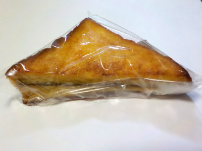
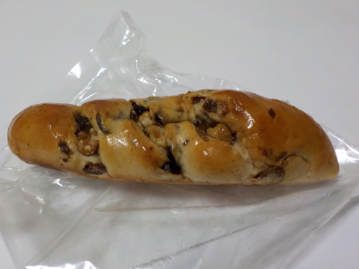
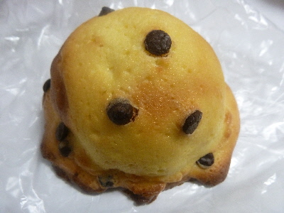

アンクリュのカリカリフレンチ（チョコ）。
2023/08/11

食パン1枚を斜めにカットして重ねたタイプのフレンチトーストです。
味がしっかりシミてる上にチョコが入っているので、ボリュームがありました。フレンチトーストにチョコって珍しいですね。
しっかり甘くて満足満足でした。
一畑百貨店内には来年閉店の紙があちこちに貼ってありました。あと何回行けるかな。
島根県松江市朝日町681番地一畑百貨店内
2023/08/11

食パン1枚を斜めにカットして重ねたタイプのフレンチトーストです。
味がしっかりシミてる上にチョコが入っているので、ボリュームがありました。フレンチトーストにチョコって珍しいですね。
しっかり甘くて満足満足でした。
一畑百貨店内には来年閉店の紙があちこちに貼ってありました。あと何回行けるかな。
2023/04/02

ジューシーな感じのリンゴやレーズンが沢山入ってて、しっとりしてて甘いパンでした。
果肉の味が美味しかったです。満足感の高いパンだなと思いました。
2017/10/15
一畑百貨店内に新しく出来たパン屋さんです。
ドンクがなくなって、新しいパン屋に変わったようです。暑い夏には熱中症対策の商品が色々出ますよね。

スイートブールです。
下のほうはコンガリ焼き色になってて、香ばしい味わいでした。
見た感じ、クッキー生地で甘いのかなと思ったんですが、ふんわりとしていてマイルドな甘さのパンでした。